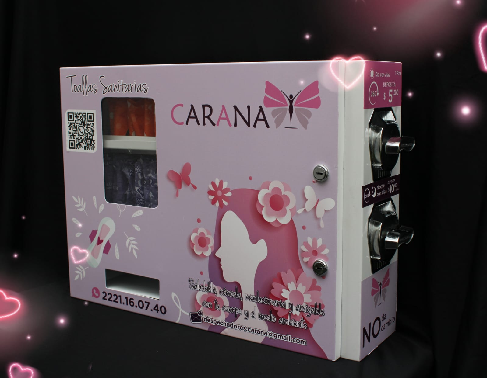

Nuestro Producto Revolucionario
CARANA presenta el dispensador de toallas femeninas más avanzado y conveniente del mercado. Diseñado pensando en la comodidad y la higiene de la mujer moderna.
Solicitar InformaciónCaracterísticas Principales
Diseño Higiénico
Fabricado con materiales antibacterianos para mantener las toallas en perfectas condiciones.
Fácil de Usar
Mecanismo de dispensación suave y silencioso para una experiencia cómoda.
Capacidad Óptima
Almacena hasta 50 toallas, reduciendo la frecuencia de recarga.
Instalación Versátil
Puede montarse en la pared o usarse como unidad independiente.